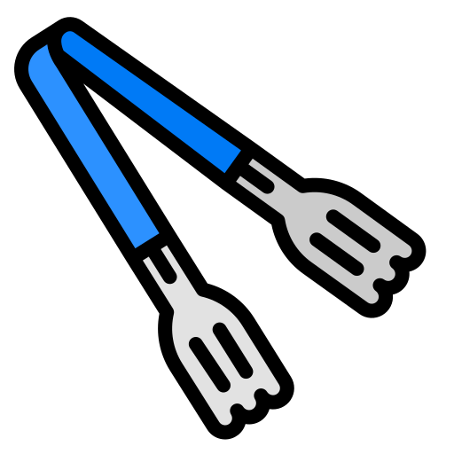
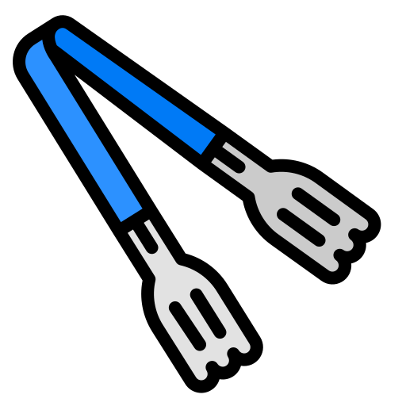

Hi, I’m Roy Ysmael
Web Developer | Creative Thinker | Problem Solver
I spent six years working as a Senior Operations Coordinator at Cruise, an autonomous car company in San Francisco. I helped get hundreds of self-driving cars out on the road and worked closely with both hardware and software engineers to test out new features and improve how the cars performed. Outside of work, I’m usually by my smoker making BBQ (low and slow is the way to go) or catching up on whatever’s trending on Netflix. Now, I’m excited to pivot into full stack development and take on a new kind of challenge.
Skills & Tools
| Skill / Tool | Experience Level |
|---|---|
| HTML / CSS / JavaScript | Intermediate |
| Git / GitHub / VS Code | Intermediate |
| Trello / Slack / Jira | Advanced |